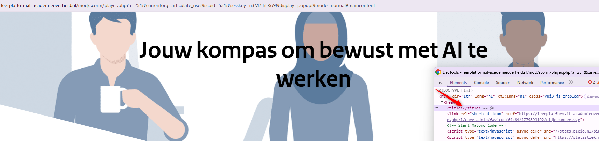
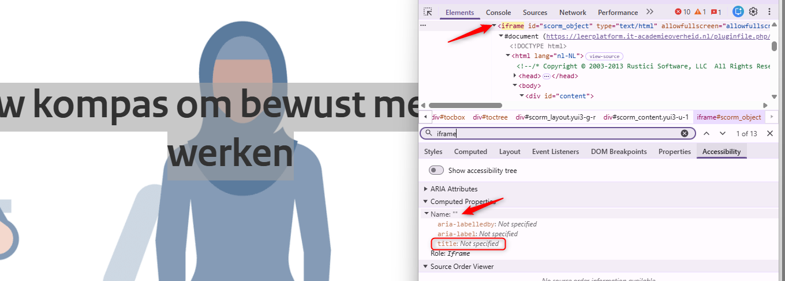
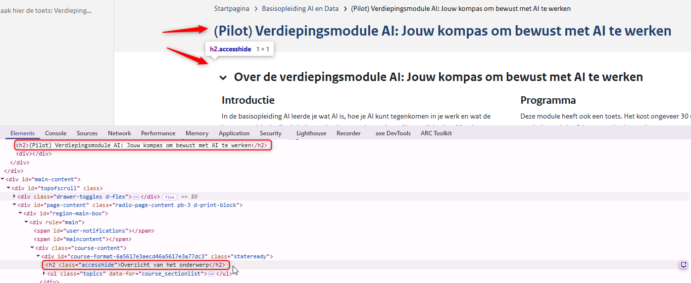
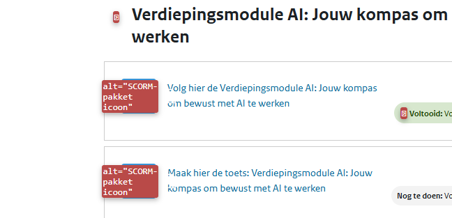
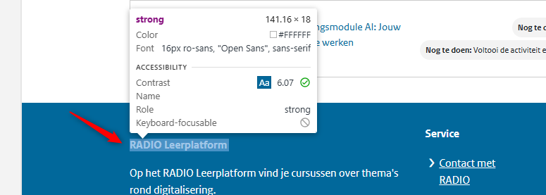
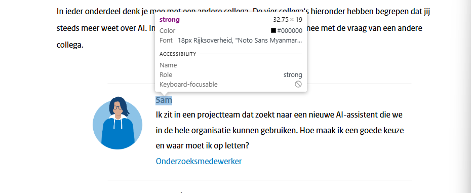
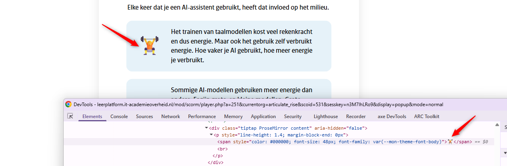

Audit digitale toegankelijkheid van e-learningmodule Jouw kompas om bewust met AI te werken
Samenvatting
Wij hebben de e-learningmodule "Jouw kompas om bewust met AI te werken" op leerplatform.it-academieoverheid.nl onderzocht tussen 13 en 16 juli 2026, inclusief de bijbehorende toets. Op dit moment is een deel van de succescriteria als voldoende beoordeeld. In dit rapport lees je welke punten nog verbetering behoeven en hoe deze kunnen worden aangepakt.
#1 - Popup-venster heeft geen beschrijving die een schermlezer kan voorlezen
Impact: MediumType: ContentWCAG: 2.4.2EN: 9.2.4.2

De module wordt getoond in een popup-venster of in een nieuw browsertabblad. Het <title>-element van deze pagina is leeg. Het <title>-element is verplicht en hoort een beknopte, informatieve beschrijving van de inhoud van de pagina te bevatten. Zo begrijpen bezoekers waar de pagina over gaat en kunnen ze makkelijker navigeren.
User story
Ik lees de website met een schermlezer. Als ik een nieuw venster of browsertabblad open, hoor ik geen paginatitel die vertelt waar de pagina over gaat. Ik verwacht dat mijn schermlezer direct een duidelijke titel aankondigt zodra de pagina laadt.
Hoe te testen
Controleer de titel van elke pagina in het browsertabblad (het <title>-element in de HTML). De titel moet het onderwerp of doel van de pagina beschrijven.
Oplossing
Vul het <title>-element met een beschrijvende tekst die de inhoud van de pagina nauwkeurig weergeeft.
#2 - Iframe heeft geen title-attribuut
Impact: GrootType: TechniekWCAG: 4.1.2EN: 9.4.1.2

De cursus staat in een <iframe>-element zonder title-attribuut. Schermlezers kunnen daardoor het doel van het iframe niet aankondigen. Bezoekers weten dan niet welke content er is ingesloten en of het de moeite waard is om erin te navigeren. Dat bemoeilijkt de navigatie voor bezoekers die hulpsoftware gebruiken.
User story
Ik lees de website met een schermlezer. Als ik een ingesloten element tegenkom, hoor ik geen beschrijving en weet ik niet wat het bevat. Ik verwacht dat mijn schermlezer een duidelijke naam aankondigt, zodat ik kan beslissen of ik het wil verkennen.
Hoe te testen
Snelle controle met onze eigen tool: open de WCAG Radar en zet op het tabblad Developer de optie "Toon toegankelijke naam" aan. Controleer daarna met een schermlezer of elk iframe op de website een betekenisvol title-attribuut heeft dat het doel of het type content duidelijk maakt.
Oplossing
Voeg een beschrijvend title-attribuut toe aan het <iframe>-element dat duidelijk maakt welke content is ingesloten. Bijvoorbeeld: <iframe title="E-learning module Jouw kompas om bewust met AI te werken" src="..."></iframe>.
#3 - Bij 200% en 400% zoom is content niet zichtbaar en bedienbaar
Als de pagina's van de cursus worden bekeken op een schermresolutie van 1280 bij 1024 pixels en ingezoomd naar 200% of 400%, is de content onderaan de pagina niet zichtbaar en kan er niet naartoe worden gescrold. Op sommige pagina's valt de sectie "Checkvragen" geheel of gedeeltelijk weg, samen met de content eronder. Op alle pagina's is de link om naar de volgende stap te gaan (zoals "6 van 6 — Afsluiting") niet zichtbaar en niet bedienbaar.
Hetzelfde probleem doet zich voor bij alle stappen van de toets "Jouw kompas om bewust met AI te werken: Toets": de laatste keuzerondjes en de "Controleer"-knoppen zijn niet bereikbaar als de pagina is ingezoomd.
User story
Ik zoom in naar 200% of 400% om de pagina te lezen. Als ik inzoom, verdwijnen sommige links en knoppen of zijn ze niet meer te gebruiken. Ik verwacht dat alle content en interactieve elementen zichtbaar en bedienbaar blijven bij inzoomen.
Hoe te testen
Zet het browservenster op 1280 pixels breed en zoom met Command + (Mac) of Control + (Windows) naar 200% en naar 400%. Alle tekst moet leesbaar blijven en er mag geen content of functionaliteit verloren gaan.
Oplossing
Zorg ervoor dat alles blijft werken als een bezoeker inzoomt naar 200% of 400% op een scherm van 1280 bij 1024 pixels.
Deze pagina is de schil waar de e-learningcursus op staat. De modulestappen openen vanaf deze pagina in een popup-venster en delen één sessiegebonden URL. Deze pagina maakt geen deel uit van de e-learningmodule. We geven deze bevindingen enkel ter informatie.
Op deze pagina is de broodkruimelnavigatie opgebouwd als een verzameling losse links. De onderliggende structuur en de relatie tussen deze links zijn niet semantisch vastgelegd in de HTML. Plaats de broodkruimellinks in een <nav>- of <ol>-element om context en betekenis over te brengen aan hulpsoftware. Zo is duidelijk dat deze links samen een broodkruimelnavigatie vormen.
User story
Ik lees de website met een schermlezer. Als ik de broodkruimelnavigatie gebruik om te begrijpen waar ik ben, hoor ik alleen losse links zonder structuur. Ik verwacht dat mijn schermlezer dit aankondigt als een geordende navigatielijst.
Hoe te testen
Inspecteer de broodkruimelnavigatie met een schermlezer of via de broncode. Controleer of de broodkruimel is opgebouwd als een gestructureerde lijst en of de hiërarchie wordt doorgegeven aan hulpsoftware.
Oplossing
Plaats de broodkruimellinks in een <nav>-element met aria-label="Breadcrumb" en gebruik een geordende lijst (<ol>) met <li>-elementen om de hiërarchische relatie tussen de items over te brengen. Bijvoorbeeld:
Deze structuur maakt voor hulpsoftware duidelijk dat de links een broodkruimelnavigatie vormen met een vaste volgorde en hiërarchie.
#5 - Kopniveaus zijn niet juist gebruikt
Impact: MediumType: ContentWCAG: 1.3.1EN: 9.1.3.1

Op deze pagina wordt een kop van niveau 2, "(Pilot) Verdiepingsmodule AI: Jouw kompas om bewust met AI te werken", direct gevolgd door een andere kop van hetzelfde niveau, "Overzicht van het onderwerp". De tweede kop is visueel verborgen, maar wel beschikbaar voor bezoekers met hulpsoftware.
Dit wijst op een onjuiste koppenstructuur. Koppen horen een logische hiërarchie te volgen. Een kop hoort niet direct gevolgd te worden door een kop van hetzelfde of een hoger niveau zonder tussenliggende content.
User story
Ik lees de website met een schermlezer. Als ik door de koppen navigeer, volgen twee koppen van hetzelfde niveau elkaar direct op zonder content ertussen. Daardoor denk ik dat er content ontbreekt. Ik verwacht dat elke kop een eigen sectie met content inleidt.
Hoe te testen
Open de WCAG Radar en inspecteer de koppenstructuur van de pagina. De lijst toont het niveau van elke kop (h1, h2, h3 enzovoort).
Inspecteer de pagina: staan er twee koppen van hetzelfde niveau direct achter elkaar zonder content ertussen? Dat wijst op een onjuiste koppenstructuur.
Oplossing
Zorg dat koppen juist genest zijn en de structuur van de content weerspiegelen. Na een <h2> hoort bijvoorbeeld een <h3> of content te volgen, geen tweede <h2> of een <h1>.
#6 - Links zijn alleen door kleur te onderscheiden van de omringende tekst
Op deze pagina staan de links "radio@rijksoverheid.nl" en "Feedbackformulier pilot 'Jouw kompas om bewust met AI te werken'" in lopende tekst. Kleur is het enige verschil tussen de link en de gewone tekst. Alleen kleur gebruiken om links te onderscheiden is een probleem voor bezoekers die slechtziend of kleurenblind zijn.
User story
Ik kan kleuren niet goed onderscheiden. Als ik een tekst met links lees, kan ik niet zien welke woorden klikbaar zijn. Ik verwacht dat links ook een onderstreping of een ander visueel kenmerk hebben.
Hoe te testen
Bekijk de pagina in grijstinten met de WCAG Radar. Elk element dat informatie overbrengt, zoals verplichte velden, foutmeldingen, linkopmaak in lopende tekst of grafieksegmenten, heeft een tweede kenmerk nodig: tekst, een icoon, een onderstreping of een patroon.
Oplossing
Links in lopende tekst moeten aan twee voorwaarden tegelijk voldoen: het kleurcontrast tussen de link en de omringende tekst is minimaal 3,0:1 en er is een extra visueel onderscheid als de link gehoverd wordt of focus krijgt. Let op! De linktekst zelf moet een contrast van minimaal 4,5:1 hebben.
#7 - Decoratieve iconen zijn niet verborgen voor hulpsoftware
Impact: KleinType: TechniekWCAG: 1.1.1EN: 9.1.1.1

In de sectie "Verdiepingsmodule AI: Jouw kompas om bewust met AI te werken" leest een schermlezer puur decoratieve iconen voor. Deze iconen hebben de alt-tekst "SCORM-pakket icoon". Omdat de iconen geen informatieve waarde hebben, zorgt dit voor onnodige ruis voor schermlezergebruikers en wordt de pagina lastiger te navigeren. Decoratieve elementen horen verborgen te zijn voor hulpsoftware.
User story
Ik lees de website met een schermlezer. Als ik door de pagina navigeer, hoor ik decoratieve iconen die niets toevoegen. Ik verwacht dat die iconen worden overgeslagen, zodat ik me op de echte content kan richten.
Hoe te testen
Controleer alle afbeeldingen, iconen en SVG's, bijvoorbeeld met de WCAG Radar of via de broncode. Informatieve elementen hebben een toegankelijke naam nodig die hun betekenis overbrengt: een alt-attribuut op een <img>, een aria-label of <title>-element op een SVG, of een toegankelijke naam op iconfonts. Controleer met een schermlezer dat er geen ruis wordt voorgelezen, zoals een bestandsnaam of het woord "afbeelding".
Oplossing
Verberg de decoratieve iconen voor schermlezers door het alt-attribuut leeg te laten: alt="".
#8 - Koppen in de footer zijn niet als kop gemarkeerd
Impact: MediumType: ContentWCAG: 1.3.1EN: 9.1.3.1

Op deze pagina staan in de footer teksten die als kop dienen, maar de kopelementen ontbreken. Er zijn <strong>-elementen gebruikt om ze eruit te laten zien als koppen. Zie "RADIO Leerplatform", "Service" en "Over deze site".
Het <strong>-element is bedoeld voor semantische nadruk, niet voor het maken van koppen. Wie het gebruikt in plaats van kopelementen (<h1> tot en met <h6>) geeft de structuur van de content verkeerd weer en maakt die ontoegankelijk voor hulpsoftware.
User story
Ik lees de website met een schermlezer. Als ik op koppen navigeer, mis ik koppen die niet als kop zijn opgemaakt. Ik verwacht dat alle titels als echte koppen zijn gemarkeerd, zodat ik de structuur van de pagina kan volgen.
Hoe te testen
Gebruik de WCAG Radar. Zet de koppenoptie aan en controleer elke kop op de pagina.
Oplossing
Verwijder de <strong>-elementen en gebruik voor deze teksten de juiste kopelementen.
#9 - Tekstcontrast is onvoldoende bij toetsenbordfocus
Op deze pagina verandert in de footer de tekstkleur van de links "Neem contact op met onze leverancier" en "Bekijk de website" naar wit zodra ze toetsenbordfocus krijgen, op de lichtblauwe achtergrond (#9DDEFE). De contrastverhouding is dan 1,6:1 en dat is te laag.
User story
Ik gebruik de website met een toetsenbord en heb een visuele beperking. Als ik naar een element navigeer en het focus krijgt, wordt de tekst slecht leesbaar door het lage contrast. Ik verwacht dat tekst leesbaar blijft als een element focus heeft.
Hoe te testen
Gebruik de Tab-toets om naar het element te navigeren en maak een screenshot. Open de WCAG Radar, optie Contrast, en meet de kleur van de tekst en de achtergrond.
Oplossing
Zorg dat de tekstkleur voldoende contrast houdt (minimaal 4,5:1 voor normale tekst) als het element toetsenbordfocus krijgt.
Op deze pagina leunt in de sectie "Moeilijke woorden" de instructie "De woorden die daar staan, hebben we in de lopende tekst blauw en dikgedrukt gemaakt." op kleur en vorm. Blinde bezoekers die een schermlezer gebruiken krijgen geen kleurinformatie en kunnen niet bepalen naar welk element wordt verwezen. Bezoekers die kleurenblind zijn nemen de beschreven kleurverschillen mogelijk niet waar. Instructies moeten daarom ook een verwijzing bevatten die niet afhangt van kleur of vorm, zodat alle bezoekers de informatie begrijpen.
User story
Als blinde of slechtziende bezoeker wil ik dat instructies naar de tekst zelf verwijzen in plaats van naar het uiterlijk ervan, zodat ik begrijp wat er wordt bedoeld.
Hoe te testen
Lees alle instructies op de pagina en controleer of ze naar elementen verwijzen via hun uiterlijk, zoals kleur, vorm, grootte of positie.
Oplossing
Verwijs in de tekst naar het element zelf, niet naar de kleur of vorm.
#11 - Koppen zijn niet als kop gemarkeerd
Impact: MediumType: ContentWCAG: 1.3.1EN: 9.1.3.1

Op deze pagina zijn de teksten "Sam", "Hannah", "Ryan" en "Nina" niet als kop opgemaakt. Er zijn <strong>-elementen gebruikt om ze eruit te laten zien als koppen.
Het <strong>-element is bedoeld voor semantische nadruk, niet voor het maken van koppen. Wie het gebruikt in plaats van kopelementen (<h1> tot en met <h6>) geeft de structuur van de content verkeerd weer en maakt die ontoegankelijk voor hulpsoftware.
User story
Ik lees de website met een schermlezer. Als ik op koppen navigeer, mis ik koppen die niet als kop zijn opgemaakt. Ik verwacht dat alle titels als echte koppen zijn gemarkeerd, zodat ik de structuur van de pagina kan volgen.
Hoe te testen
Gebruik de WCAG Radar. Zet de koppenoptie aan en controleer elke kop op de pagina.
Oplossing
Verwijder de <strong>-elementen en gebruik voor deze teksten de juiste kopelementen.
Op deze pagina en op meerdere andere pagina's staan checkvragen. Deze groep selectievakjes heeft het groepslabel "Checkvragen". Dat label is niet programmatisch aan de groep gekoppeld.
Door die ontbrekende koppeling horen schermlezergebruikers niet wat de relatie is tussen het groepslabel en de elementen die het beschrijft.
User story
Ik lees de website met een schermlezer. Als de schermlezer bij de selectievakjes komt, hoor ik niet wat de relatie is tussen de vraag en de antwoorden.
Hoe te testen
Gebruik een schermlezer om deze groep te inspecteren. Een andere optie is de broncode lezen om te controleren of de groep een toegankelijke naam heeft. Gebruik de WCAG Radar om deze naam te controleren.
Oplossing
Koppel het groepslabel expliciet aan de bijbehorende groep. Dat kan bijvoorbeeld met aria-labelledby, of door het formulier op te bouwen met fieldset en legend.
Op deze pagina staat onder de vraag "Wat is de veiligste keuze?" een opdracht om puzzelstukjes met elkaar te verbinden. Als een puzzelstukje is geselecteerd, verandert een deel van het stukje van lichtblauw (#7FBEE3) naar blauw (#007DC7) om de geselecteerde status aan te geven. Het contrast tussen deze twee kleuren is 2,2:1 en dat is lager dan de vereiste 3,0:1. Slechtziende bezoekers kunnen daardoor moeilijk zien welk puzzelstukje geselecteerd is.
User story
Ik gebruik de website met een toetsenbord en heb een visuele beperking. Ik wil dat een geselecteerd puzzelstukje visueel te onderscheiden is, zodat ik makkelijk zie welk stukje op dat moment geselecteerd is.
Hoe te testen
Bepaal met een contrastmeter welke visuele kenmerken de status van een component weergeven, zoals geselecteerd, focus of actief. Controleer of deze kenmerken een contrast van minimaal 3,0:1 hebben met de aangrenzende kleuren.
Oplossing
Vergroot het contrast tussen de geselecteerde en de niet-geselecteerde status van de puzzelstukjes, zodat de contrastverhouding tussen beide minimaal 3,0:1 is.
De bevindingen over de paginatitel en het iframe zijn beschreven in eerdere secties.
#14 - Decoratieve emoji's worden voorgelezen door schermlezers
Impact: MediumType: ContentWCAG: 1.1.1EN: 9.1.1.1

Op deze pagina staan onder de kop "Milieu" decoratieve emoji's die geen betekenisvolle informatie overbrengen. Toch worden ze voorgelezen door schermlezers. Dat voegt onnodige en mogelijk afleidende informatie toe voor bezoekers met hulpsoftware.
User story
Als schermlezergebruiker wil ik dat decoratieve emoji's worden genegeerd, zodat ik alleen betekenisvolle content hoor. Ik verwacht dat decoratieve afbeeldingen worden overgeslagen en niet worden aangekondigd.
Hoe te testen
Navigeer met een schermlezer door content met emoji's of decoratieve symbolen. Controleer dat decoratieve elementen niet worden aangekondigd en dat informatieve elementen een betekenisvolle tekstuele beschrijving hebben. Een andere optie is het controleren van de broncode van de pagina.
Oplossing
Verberg decoratieve emoji's voor hulpsoftware. Plaats ze bijvoorbeeld in een element met aria-hidden="true", zodat schermlezers ze negeren. Alleen emoji's die betekenisvolle informatie overbrengen horen beschikbaar te zijn voor hulpsoftware.
De bevindingen over de paginatitel en het iframe zijn beschreven in eerdere secties.
#15 - Instructie leunt alleen op visuele positie
Impact: MediumType: ContentWCAG: 1.3.3EN: 9.1.3.3
Op deze pagina duidt onder de kop "Hieronder staan een aantal voorbeelden van AI-systemen. Welke voorbeelden horen bij welk risiconiveau?" een instructie content alleen aan via de visuele positie: "Sleep de vijf voorbeelden hieronder naar links als ze bij hoog risico-AI horen of rechts als ze bij verboden AI horen". Blinde bezoekers die een schermlezer gebruiken hebben geen beeld van de visuele lay-out en kunnen niet bepalen naar welk element wordt verwezen. Ook voor bezoekers die sterk inzoomen of een andere schermindeling gebruiken is de beschreven positie onbetrouwbaar. Instructies moeten daarom ook een niet-visuele verwijzing bevatten, zoals de naam of functie van het element.
Een vergelijkbaar probleem staat op de cursuspagina "6 van 6 — Afsluiting" en aan het einde van de toets. Na het sluiten van de cursus of de toets verschijnt de instructie: "Je kunt deze pagina nu sluiten. Klik op het kruisje rechtsboven."
User story
Als blinde of slechtziende bezoeker wil ik dat instructies naar de tekst zelf verwijzen in plaats van naar het uiterlijk ervan, zodat ik begrijp wat er wordt bedoeld.
Hoe te testen
Lees alle instructies op de pagina en controleer of ze naar elementen verwijzen via hun uiterlijk, zoals kleur, vorm, grootte of positie.
Oplossing
Verwijs in de tekst naar het element zelf, niet naar de positie. Is dat binnen deze module niet mogelijk? Overweeg dan een alternatieve toets voor mensen voor wie deze opdracht ontoegankelijk is.
#16 - Onvoldoende tekstcontrast bij de feedback op de opdracht
Op deze pagina verschijnen na het afronden van de opdracht onder "Hieronder staan een aantal voorbeelden van AI-systemen. Welke voorbeelden horen bij welk risiconiveau?" teksten zoals "5/5 antwoorden goed" en "Probeer opnieuw". Deze teksten zijn wit op de lichtblauwe achtergrond (#8BCBE0) en halen daarmee het minimumcontrast van 4,5:1 niet. Onvoldoende contrast maakt tekst moeilijk of niet leesbaar voor bezoekers die slechtziend of kleurenblind zijn, of die een scherm in fel licht gebruiken.
User story
Ik heb een visuele beperking. Als ik een pagina lees, kan ik tekst met weinig contrast ten opzichte van de achtergrond niet ontcijferen. Ik verwacht dat tekst altijd duidelijk afsteekt tegen de achtergrond.
Hoe te testen
Open de WCAG Radar, optie Contrast, en meet de kleur van de tekst en de achtergrond. Test de tekst op de normale weergavegrootte en het normale gewicht. Uitgeschakelde bedieningselementen zijn uitgezonderd van deze eis.
Oplossing
Tekst van normale grootte (kleiner dan 18 pt, of kleiner dan 14 pt vet) heeft een contrastverhouding van minimaal 4,5:1 nodig om goed leesbaar te zijn. Pas de tekstkleur of de achtergrondkleur aan zodat de contrastverhouding minimaal 4,5:1 is. Controleer dit met een contrastmeter zoals de Colour Contrast Analyser.
Op deze pagina staat onder de kop "Vragen over de toekomst" een carrousel. De pijlknoppen en de navigatiestippen eronder zijn wit op de lichtblauwe achtergrond (#80CFCA) en hebben een contrastverhouding van 1,8:1. Dat voldoet niet aan de vereiste 3,0:1 voor interactieve componenten. Interactieve componenten zoals knoppen, invoervelden, selectievakjes en schakelknoppen moeten visueel te onderscheiden zijn van hun omgeving. Als de rand of het vlak van een component onvoldoende contrast heeft, kunnen slechtziende bezoekers het bedieningselement mogelijk niet waarnemen of herkennen.
User story
Ik ben slechtziend of kleurenblind. Als ik de carrousel gebruik, kan ik niet zien waar de knoppen zitten. Ik verwacht dat alle interactieve elementen duidelijk zichtbaar zijn tegen de achtergrond.
Hoe te testen
Meet met een contrastmeter zoals de Colour Contrast Analyser het contrast van interactieve elementen, focusindicatoren, randen van invoervelden, statussen van selectievakjes en keuzerondjes en informatieve iconen ten opzichte van hun achtergrond. Het minimum is 3,0:1.
Oplossing
Zorg dat de visuele rand of het vlak van de componenten een contrastverhouding van minimaal 3,0:1 heeft met de aangrenzende achtergrond. Dit geldt voor alle statussen van de componenten, inclusief :focus, :hover en :active.
De bevindingen over de paginatitel en het iframe zijn beschreven in eerdere secties.
Over dit onderzoek
Leeswijzer
Onze rapporten zijn anders. Bij het bespreken van de gevonden problemen volgen wij niet de structuur van de norm, maar die van jouw website of app. Hierdoor kun je gewoon per pagina of scherm aan de slag gaan. Wel zo makkelijk! Je vindt verderop een overzicht van alle pagina’s met problemen.
We geven je bij elk gevonden issue een paar voorbeelden, maar niet een complete lijst. Controleer zelf of het probleem ook nog op andere plekken voorkomt. Zie het rapport als een leidraad.
Gebruikte norm
Dit onderzoek laat zien in hoeverre de website op dit moment voldoet aan WCAG 2.2, niveau A en AA. WCAG staat voor Web Content Accessibility Guidelines. Dit is de internationale norm voor digitale toegankelijkheid. De Europese norm EN 301 549 bevat alle eisen van WCAG op niveau A en AA.
In dit rapport hebben we korte beschrijvingen van de succescriteria uit de norm opgenomen, met een algemene uitleg erbij. Wil je ze helemaal lezen? Bekijk dan de documentatie van WCAG.
Gebruikte onderzoeksmethode
We gebruiken de onderzoeksmethode WCAG-EM van het W3C. Het proces ziet er als volgt uit:
vaststellen wat binnen en buiten scope valt
vaststellen welke technologieën zijn gebruikt
steekproef (sample) samenstellen
steekproef onderzoeken
gevonden issues beschrijven
Het grootste deel van het onderzoek doen we met de hand. Voor een deel van de toegankelijkheidseisen gebruiken we automatische tools als ondersteuning, zoals axe-core en Chrome Developer Tools.
Belangrijk om te weten
Dit rapport helpt je om de toegankelijkheid van je website te verbeteren. Maar let op: het is geen definitieve, volledige lijst van alle aanwezige toegankelijkheidsproblemen. Dat zit zo:
Het is een steekproef
Ten eerste is het onderzoek gebaseerd op een steekproef. Die is op een betrouwbare manier genomen, en de meeste problemen zullen daardoor zeker aan het licht komen. Toch kan een probleem net buiten de steekproef vallen. Bij een volgend onderzoek kan het wel ontdekt worden.
Op basis van falsificatie
We beoordelen vanuit het principe van falsificatie. Dat houdt in dat we proberen te bewijzen dat iets niet waar is, in plaats van te bevestigen dat het klopt. ‘Voldoet’ betekent daarom dat we geen reden hebben gevonden om een punt af te keuren. Maar als we later wél een reden vinden, kan het alsnog worden afgekeurd.
Voortschrijdend inzicht
Het komt voor dat de beoordeling van een succescriterium op detailniveau verandert. De norm beschrijft namelijk niet élk mogelijk scenario. Samen met andere onderzoeksbureaus overleggen we hoe we met bepaalde situaties omgaan. Zo kan iets dat nu wordt afgekeurd, soms bij een volgend onderzoek worden goedgekeurd en andersom.
Oplossen leidt tot nieuw probleem
Ten slotte kan het gebeuren dat bij het oplossen van een probleem onbedoeld een nieuw toegankelijkheidsprobleem ontstaat. Dat komt dan bij een volgend onderzoek pas naar voren.
Hoe werkt dit rapport?
Bevindingen bekijken en filteren
Alle gevonden toegankelijkheidsproblemen staan onder Gevonden problemen. Je kunt de bevindingen filteren op:
Impact (Groot, Medium, Klein, Advies) — hoe ernstig is het probleem voor de gebruiker?
Type (Content, Techniek) — moet de inhoud of de techniek worden aangepast?
Status (Open, Opgelost) — welke problemen zijn al verholpen?
Voortgang bijhouden
Je kunt je voortgang op twee manieren bijhouden:
CSV-export — exporteer alle bevindingen als CSV-bestand en laad het in een (online) spreadsheet om met je team samen te werken.
Jira-export — exporteer alle bevindingen als Jira-compatibel CSV-bestand. Importeer het via Jira > Issues > Import issues from CSV. Bevindingen worden aangemaakt als bugs met prioriteit op basis van impact.
Registreer in de browser — activeer deze optie om per bevinding bij te houden of het is opgelost. Je voortgang wordt opgeslagen in je browser. Niemand anders kan je resultaat zien. Let op: de voortgang is gekoppeld aan je browser. Als je een andere browser of een ander apparaat gebruikt, begint de telling opnieuw.
Plan van aanpak — download een geprioriteerd plan van aanpak om de gevonden problemen stap voor stap op te lossen. Dit is beschikbaar bij audits vanaf maart 2026.
Link naar een specifieke bevinding delen
Bij elke bevinding verschijnt een link-icoon wanneer je er met de muis overheen gaat. Klik op dit icoon om de directe link naar die bevinding te kopiëren. Je kunt deze link plakken in een e-mail of chatbericht, bijvoorbeeld om een vraag te stellen aan Proper Access over een specifiek punt.